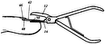

Brevets cités

Improvement in finger-nail trimmers
1876
Island
1891
Manicure nail-clipper
1904
Wilcox Henry

Finger-nail trimmer
1906
Smith James H.

Nail-clipper
1907
Havell George

Nail-clipper
1910
Leineweber Herman

Nail clipper
1976
Loda Paul P.

Nail clipper
1987
Husain Abbas

Nail clipper with guard means
1988
Ohori Hiroshi

Nail splitter device for implementing a wedge resection procedure to remove an ingrown toenail
1995
Gaillard Douglas S.

Nail cutter
1998
Dolev Moshe